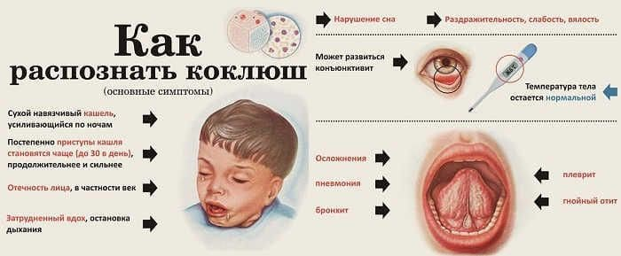

И снова коклюш на приеме. За месяц порой от одного до пяти детей с коклюшем приходит. Истории у всех разные, но всегда есть одна общая черта: неоконченная вакцинация АКДС.

А бывает один за одним: сперва приходит семья, боящаяся прививок, за ней следом ребенок с коклюшем (в этот период он уже незаразен, не пугайтесь), а за ней снова семья с младенцем начинает беседу с «я подписала отказ, я боюсь вводить АКДС ребенку – читала, она плохо переносится». И хочется просто молча выйти в коридор, догнать предыдущую семью, занести того ребенка обратно в мой кабинет, нажать ему шпателем на корень языка (спровоцировать коклюшный приступ) и сказать: ВОТ ЧЕГО надо бояться, а не пару дней недомогания после АКДС! Но есть врачебная тайна, этика и право родителей на отказ от прививок – играть надо по правилам, даже когда проигрываешь.
Из последнего:
✗ приезжала в гости подруга, у нее «странный» кашель такой был, чуть засмеется, тут же заходится в кашле, аж лицо синеет. А через пару недель и мой ребенок так же закашлял, и началось… Ему 10 месяцев, а вакцину АКДС лишь один раз ввести успели. Я даже не думала, что взрослые тоже коклюшем болеют;
✗ нам педиатр говорил «не надо торопиться с прививками, у вас слабенький ребенок, успеем», а когда мы к ней в 6 месяцев с коклюшным кашлем пришли, она же на меня и стала кричать: «Почему ребенок до сих пор не привит?!»;
✗ я начиталась о вреде прививок и отказывалась от них, теперь жалею; если бы я знала, какая страшная болезнь этот коклюш, я бы изменила решение, но ведь со мной врач не поговорила даже, сказала только: «Отказываетесь?
Вот тут тогда подпишите»;
✗ старший ребенок у меня в сад ходит, там карантин по коклюшу объявили, но я не волновалась, он ведь привит у меня полностью. А вот младшей 8 месяцев, все никак прививать не начнем, то сопли, то Пентаксима нет; старший не заболел, а вот она подхватила, через него, видимо;
✗ я с малышом выписалась из роддома, а две недели спустя у нас с мужем появился какой-то жуткий кашель: надсадный, ночью будит, как начнешь кашлять, никак не остановиться, того и гляди легкие выплюнешь; даже мышцы брюшного пресса болели от кашля, как после тяжелой тренировки. Но у нас терапевт коклюш почему-то не заподозрил, хотя теперь мы понимаем, что это был он и мы тогда сами заражали своего ребенка. А через три недели у нас с мужем кашель наконец-то начал стихать, тут у нас дочка и заболела, ей чуть больше одного месяца, она по возрасту не успела получить АКДС;
✗ доктор, у моего ребенка жуткий кашель, по 40 приступов в сутки уже два месяца, но это не главная моя жалоба (?!!). Его измучила рвота, эти кашлевые приступы в последний месяц вызывают рвоту, до десяти (!!) раз в день его рвет. Как от этого вылечить?
И вот эти родители сидят и просят помощи, а помочь уже нечем. Когда начался период спазматического кашля, ни облегчить, ни ускорить болезнь уже невозможно. Лечит только время и терпение.
(Сергей Бутрий "Здоровье ребенка: современный подход")